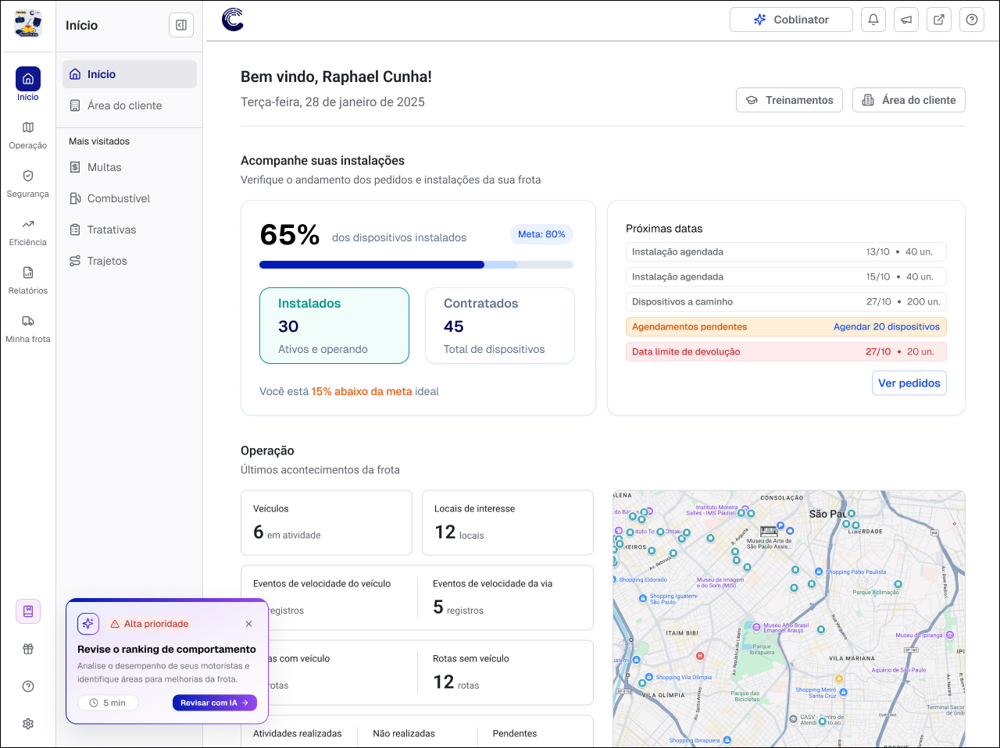

Recomendações Inteligentes: a régua determinística por trás da IA
Especifiquei a lógica determinística por trás de um motor de recomendações guiado por IA, que gerou mais de 7 mil cliques em CTAs entre março e junho e levou a configuração básica de frotas Enterprise de 52% para 86%, destravando um platô de 6 meses na Basic Value estável.
- Cliques em recomendações
- 7 mil+
- Config. básica (Enterprise)
- 52% → 86%
- Basic Value estável
- 37% → 50%
A empresa
Neste projeto atuei como PM em uma plataforma B2B de telemetria veicular: hardware instalado nos veículos e um painel de software que juntos dão ao gestor de frota visibilidade sobre localização, comportamento de direção, manutenção e operação. O contrato é recorrente, vendido para frotas de portes bem diferentes, de pequenas transportadoras a operações enterprise com milhares de veículos.
Depois da venda, o cliente passa por duas etapas antes de começar a extrair valor de fato: a instalação física dos dispositivos, e a configuração do painel (motoristas, alertas, geocercas, grupos). Só depois disso os dados viram gestão real da frota. Essa etapa inicial é o que a empresa chama de ativação.
Contexto
Este projeto nasceu como um desdobramento dos estudos sobre onboarding. Durante esse discovery, desenvolvi uma métrica adaptada de Basic Value, utilizada para medir o percentual de ativação básica de uma empresa, ou seja, o quanto ela já configurou o produto para começar a gerar valor. Hoje, essa métrica é utilizada como um dos principais termômetros de risco de churn precoce.
Além dos dados quantitativos, a pesquisa qualitativa revelou outro ponto importante: mesmo após ativar a plataforma, muitos clientes não sabiam quais eram os próximos passos. Faltava clareza sobre o potencial da ferramenta, entendimento das funcionalidades disponíveis e uma orientação prática que ajudasse a evoluir o uso.
O problema não era falta de interesse. A plataforma oferece dezenas de possibilidades de configuração e, sem qualquer priorização, tudo parecia ter a mesma importância. O resultado era uma alta carga cognitiva logo nos primeiros acessos, dificultando a ativação e reduzindo engajamento no produto.
Atuei como PM e UX principal (PMX) no time de Account Experience, e esta foi a segunda frente que assumi como DRI depois da Basic Value: um motor de recomendações que, a partir do que já tinha sido feito no painel e do que ainda faltava para o Basic Value, decide a cada momento qual é a próxima ação que faz sentido mostrar para aquele cliente específico.
Problema
O direcionamento das lideranças era aplicar IA nas soluções, sem um recorte definido de onde ou como. Rapidamente ficou claro que deixar um LLM decidir sozinho o que recomendar e quando é uma aposta arriscada: não temos como auditar por que o modelo recomendou X para o cliente Y, nem garantir que ele nunca mostre duas recomendações concorrentes na mesma sessão. Esse tipo de sobrecarga foi exatamente o que a pesquisa da Basic Value já tinha apontado como causa de abandono.
O problema de produto real, então, não era gerar texto personalizado: era decidir, de forma determinística e auditável, qual recomendação vence em cada contexto, antes de qualquer LLM entrar em cena. Essa foi a parte do projeto que assumi como foco principal.
Processo
Mapeei cada uma das jornadas que compõem o Basic Value (Instalação e Setup + Configurações, nesta primeira versão) em sinais objetivos já disponíveis no painel e no CRM: percentual de veículos instalados, dias sem nenhum movimento relevante, se o próximo lote de instalação já tinha data marcada, quantos dos 9 critérios de Setup já haviam sido cumpridos, entre outros. Sobre esses sinais, especifiquei duas camadas de regra:
- Farol de saúde. Classifica cada conta em Vermelho, Amarelo, Azul ou Verde, avaliado sempre nessa ordem: a primeira condição verdadeira prevalece. Exemplo: dispositivos entregues há 10 ou mais dias sem agendamento cai direto em Vermelho, independente de qualquer outro sinal.
- Régua de criticidade. Traduz cada situação operacional específica em um nível de recomendação (Crítico, Urgente, Importante ou Sugestivo), cada um com seu próprio componente de UI e regra de cooldown.
- Coordenação entre jornadas. No máximo 1 recomendação Crítica, Urgente ou Importante ativa por vez: se a Instalação estiver em Crítico, o Setup é automaticamente rebaixado para Sugestivo, mesmo que sozinho merecesse um nível mais alto.
- Framework de supressão. Toda condição resolvida gera supressão imediata da recomendação, sem esperar o próximo ciclo. Cada nível também tem sua própria escalada progressiva após dispensas repetidas, para não gerar fadiga.
Só depois que essa camada de regras decide o quê e quando recomendar, um LLM entra para personalizar a mensagem (nome do cliente, tamanho da frota, contagens específicas), nunca a decisão em si.
Antes de expor isso a clientes reais, validamos a lógica isoladamente: rodamos o motor sobre dados de uma frota real, usando Mastra AI para orquestrar a chamada ao LLM, e comparamos a saída contra o que a régua determinística previa. Essa etapa também respondeu perguntas operacionais que só aparecem depois que a lógica existe de fato: quantas chamadas de LLM por cliente isso gera, e se cabe rodar o motor a cada acesso ao painel ou só periodicamente (optamos por execução periódica, não em tempo real, por custo). Na sequência, rodamos testes E2E com clientes reais em grupos A/B por feature flag, o que revelou problemas concretos antes do rollout amplo: recomendações de câmera aparecendo para frotas sem câmera instalada, ou um card flutuante duplicando uma sugestão que já tinha sido descartada em outro componente da mesma tela.
Solução
Na prática, essa lógica se traduz em quatro componentes de UI com intrusividade decrescente: modal bloqueante para Crítico, banner persistente para Urgente, card flutuante para Importante e recomendação contextual dentro do fluxo para Sugestivo. A home também muda de acordo com o estágio da frota. Não vou detalhar essa camada de experiência a fundo aqui porque não foi o meu foco principal neste projeto; a régua e a priorização acima são o que sustentam qualquer uma dessas telas.


Escolhemos lançar de forma gradual em vez de liberar para toda a base de uma vez: em março, o motor rodou só para a fatia de frotas com Basic Value mais baixo (cerca de 10% da base), e fomos abrindo para o restante ao longo de abril e maio, acompanhando o comportamento antes de expor a base inteira.
Resultado
O rollout gradual levou cerca de dois meses para ganhar tração. A partir de abril, quando a maior parte da base já tinha acesso ao motor, os cliques em CTAs de recomendação saltaram de perto de zero para mais de 7 mil eventos até junho, com cerca de 1,2 mil frotas únicas interagindo pelo menos uma vez.
A recomendação que mais convertia, de forma consistente, era a de configuração básica (Setup + Config): motoristas, alertas, POIs, grupos, limite de velocidade. Entre outubro de 2025 e junho de 2026, o percentual de MRR com essas configurações concluídas subiu em todos os portes de frota, mas o salto mais visível veio depois de abril, quando o motor passou a cobrir a maior parte da base: contas Enterprise foram de 52% para 86%, Medium de 28% para 52%, e SMB de 11% para 24%.
O reflexo disso na métrica-norte do case anterior também ficou visível: a Basic Value estável, que vinha oscilando entre 36% e 40% havia seis meses sem sair do lugar, rompeu esse patamar exatamente na janela em que o motor passou a cobrir a maior parte da base, fechando junho em 50%.
O maior aprendizado deste projeto foi que, num motor de recomendações, a parte determinística é o que sustenta a confiança do time, não a parte generativa. Uma régua de regras auditável permite explicar por que uma recomendação apareceu, prever seu comportamento antes de simular com o LLM e criar guardrails antes de qualquer geração de texto; a personalização por IA só tem espaço para funcionar bem quando já existe uma camada assim decidindo o quê e quando recomendar.